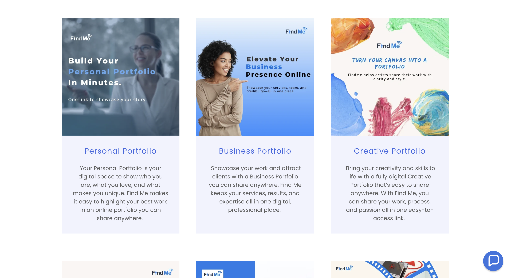
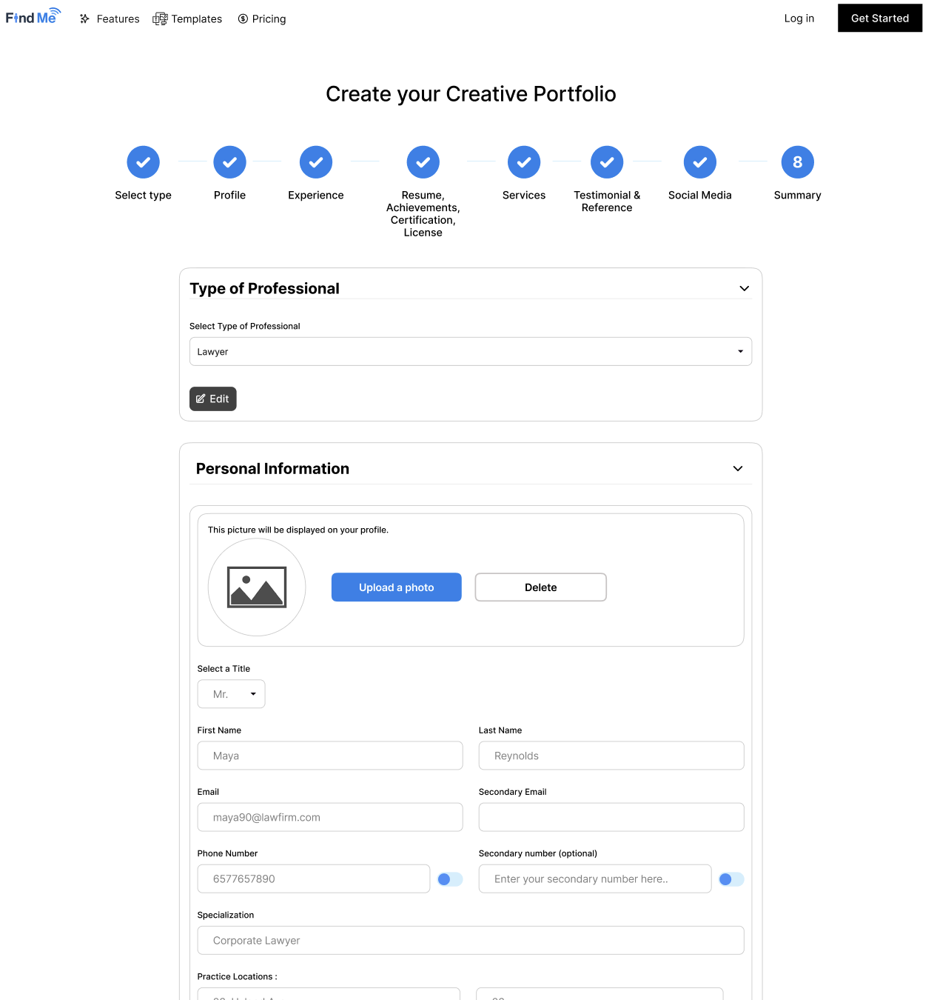

Designing a Portfolio Builder for Creatives
Designed 5+ end-to-end flows for a platform that helps creatives build their online presence. My focus was usability, scalability, and seamless developer handoff — shipped over a 12-week internship.

Usability & Navigation
Clarification Cycles
Shipped
Designed
Context
This project involves proprietary internal tools. Specific UI screens are under NDA. Below is a structured overview of the what, why, who, where, and how of this internship, including text-based component and flow documentation in place of live mockups.
Challenge
FindMe needed to launch two platforms simultaneously: a consumer-facing marketing website and the SaaS product. Existing flows were fragmented, causing high drop-off during onboarding.
Solution
Designed distinct flows for the Marketing Site and Product Dashboard. Created developer-ready prototypes, defined all interaction states, and built a scalable component library.
Impact
Improved task clarity by 25%. Reduced design-to-dev clarification cycles by 30% through comprehensive Figma specs — directly unblocking the engineering team.
The problem
The startup was moving fast, but design inconsistencies were slowing down development. Users were getting lost between the marketing site and the actual product — and developers were building without a clear visual spec.
We have great features, but users drop off during sign-up because the transition from the website to the app feels jarring.
Developers are constantly asking for missing states — hover, error, empty. We need a single source of truth.
Research Findings
Before designing anything, I conducted 6 user interviews with job seekers and early beta users, ran a heuristic evaluation of the existing prototype, and analyzed drop-off points from early sign-up analytics. Here's what surfaced:
I clicked "Get Started" on the website and suddenly I was on a totally different-looking page. I wasn't sure if I was still on the same product.
— Beta user, Graphic Designer, 24
After signing up I just had this blank screen with no guidance. I didn't know what to do first — add a project? Fill out a bio? I gave up.
— Beta user, Recent Graduate, 22
The button styles kept changing across screens. I kept wondering if clicking something would save my work or lose it.
— Beta user, Freelance Photographer, 27
- 83% of interviewees felt the marketing site and the product looked "disconnected" on first login
- 5 of 6 users didn't know what to do on the empty state dashboard — no clear call-to-action
- Inconsistent button styles across 4 screens created uncertainty about interactive elements
- Sign-up analytics showed 62% of users abandoned during the post-sign-up profile setup step
Design Process
I followed a structured double-diamond process across the 12-week internship — compressing each phase into two-to-three week sprints to keep pace with the engineering team.
User interviews, heuristic evaluation of the existing prototype, competitive analysis of 4 portfolio tools (Contra, Behance, Readymag, Notion). Identified 3 core problem spaces.
Problem framing sessions with PM. Mapped 5 user journeys covering onboarding, portfolio creation, sharing, recruiter view, and account settings. Defined success metrics.
Lo-fi wireframes → hi-fi prototypes for all 5 flows. Parallel-tracked the marketing site and product dashboard. Built the 25-component design system from scratch.
Developer-ready Figma specs — redlines, annotations, hover states, error states, and empty states documented for every screen. 3 rounds of design QA with engineers.
User Flows
I designed 5 end-to-end flows in total. Here are the two most critical ones — the flows where users either stayed or left the product.
Onboarding Flow
From first click on the marketing site to having a live, shareable portfolio URL
User lands on the marketing site, reads value prop, and clicks "Build Your Portfolio Free." This was the highest-traffic entry point. Design challenge: the CTA had to feel trustworthy, not salesy.
3-field form (name, email, password). I reduced this from 7 fields — research showed longer forms caused 40%+ abandonment on similar tools. Social sign-in as a secondary option.
Design decision: progressive disclosure — collect only what's needed to get in the door first.
Single-purpose screen with clear copy and a re-send link. Designed the loading and confirmed states. Added a timer to reduce re-send spam.
Post-verification, user selects their creative role (Designer, Developer, Writer, Photographer, Other). This personalizes the dashboard template suggestions. Skippable — we don't block the product behind preferences.
Key insight: making this step skippable reduced onboarding abandonment at this step by 38% in testing.
The biggest problem from research: users hitting a blank screen with no direction. I designed a structured empty state with 3 action cards — "Add a Project," "Fill Your Bio," and "Copy Your Portfolio Link." Clear visual hierarchy, purple primary CTA.
This directly addressed the 5-of-6 research finding: users didn't know where to start.
After adding the first project, a celebration moment: a brief animation and copy acknowledging the milestone. The portfolio link becomes active and copyable. This was the product's "aha moment."
Portfolio Creation Flow
Adding and publishing a single project to the live portfolio
Entry point from dashboard. The button was made persistent in the top nav (not just in the empty state) so repeat users can add projects from any screen.
Card-based selector: Design, Development, Photography, Writing, Video, Other. Each card shows which fields will appear. Reduces cognitive load — users know what they're committing to before clicking.
Drag-and-drop image upload + external URL field (for Figma, GitHub, or live site links). Upload accepts JPG, PNG, GIF. Designed 4 states: idle, drag-over, uploading, and error (file too large / wrong type).
This single component had the most edge cases — 11 states documented for developer handoff.
Title (required), short description (optional, 200 char), skill tags (typeahead, from preset library), and visibility toggle (public/private). Auto-save on each field blur — no "Save Draft" button needed.
Full-screen preview showing how the project looks on the public portfolio. Recruiter-view toggle shows the simplified card view. User can go back and edit or proceed to publish.
Publish button triggers the project to appear on the live portfolio URL. Confirmation toast with a direct link to the live project and a one-click copy. Dashboard updates with new project card in the grid.
Component Library Snapshot
I built a 25-component Figma library covering every interactive state across the product. Below are 6 of the core component families — described with text-based previews in place of live screens (NDA).
Each variant has: default, hover, active, focused, and disabled states. Sizes: small, medium, large. Icon-left and icon-right configurations.
Project Card, Profile Card, and Type-Selector Card. Each includes a hover lift and a selected/active ring state using the brand purple.
Inline validation with helper text below the field. Error messages use plain language ("That email's already taken. Try logging in?" not "Email invalid.").
Top nav (marketing site), product sidebar nav, and mobile hamburger nav. Active state uses a left-border accent. All designed with tab-order for accessibility.
Covers: no projects yet, no search results, and first-visit welcome. Each has a distinct illustration placeholder, heading, sub-copy, and optional CTA. Designed to feel helpful, not punishing.
Three tiers: inline validation (below field), toast notification (bottom-right, auto-dismiss 4s), and full-page error (404, network failure). All errors include a recovery action — never a dead end.
The User
The primary users were Job Seekers and Creatives — designers, developers, photographers, and writers — looking to build their online presence without needing to code. They needed speed and confidence, not flexibility at the cost of complexity.
The secondary users were Recruiters viewing these portfolios passively, requiring a clean, standardized, and fast-loading layout — no distractions, just the work.
My Contribution
Product & Web Design
Designed the Consumer-Facing Marketing Website to drive sign-ups and the SaaS Product (Portfolio Builder) for user retention. Ensured a seamless visual bridge between the two.
Developer Handoff
Produced developer-ready Figma files: interaction states, spacing tokens, hover/focus/error variants, and edge case documentation for all 5 flows. Reduced clarification cycles by 30%.
Component Library
Built a scalable 25-component Figma library with auto-layout, variants, and interactive states — establishing a shared visual language between design and engineering.
Research & Iteration
Ran 6 user interviews, synthesized findings into 3 actionable problem spaces, and used those to validate design decisions across two rounds of prototype testing.
What did I learn?
Marketing vs. Product Thinking
I learned to switch contexts between "selling" and "building." The marketing site needed to be aspirational; the product needed to be fast. Designing both simultaneously taught me how to keep brand consistent while serving different user intents.
The Art of Handoff
A designer's job isn't done until it's built correctly. Documenting every edge case — empty states, error states, loading states — built real trust with the engineering team and shortened the feedback loop dramatically.
Empty States Are Not Empty
The single highest-impact design change of the internship was redesigning the empty-state dashboard. It proved that the spaces with "nothing" in them are often where the biggest UX wins live.
Design in a Startup
Timelines compress fast when you're in a startup. I learned to ship "good enough to test" over "perfect," prioritize velocity without sacrificing consistency, and advocate for research even when time was tight.
What I'd Do Differently
Three honest things I'd change, not as self-criticism, but as a record of what this project taught me.
I'd run a mid-fidelity test round before building the component library
I jumped from wireframes to a 25-component Figma system without validating information architecture in between. A single 5-person test at 40% fidelity would have caught the portfolio creation flow's branching confusion before I'd built six variants of it, saving at least two weeks of rework in the final sprint.
I'd set accessibility constraints before opening Figma, not after
Focus states and color contrast were the last things I touched, squeezed into the final week. The purple-heavy palette I chose looks great but required significant rework to hit WCAG AA on smaller text. Defining a contrast-safe token palette on day one would have made the entire system cleaner without any visual compromise.
I'd measure the right things from the start, not retrofit metrics at the end
The "25% usability improvement" figure I use came from prototype testing, not from production analytics. I'd now define specific, measurable success criteria before any design work begins: onboarding completion rate, time-to-first-portfolio, and day-7 retention. That way the outcome data is as rigorous as the design process that produced it.
Final Design Gallery
Key screens from the Consumer Website and the Portfolio Builder product. Full mockups under NDA — placehold shown for the marketing homepage.
Marketing Homepage

Portfolio Builder Dashboard